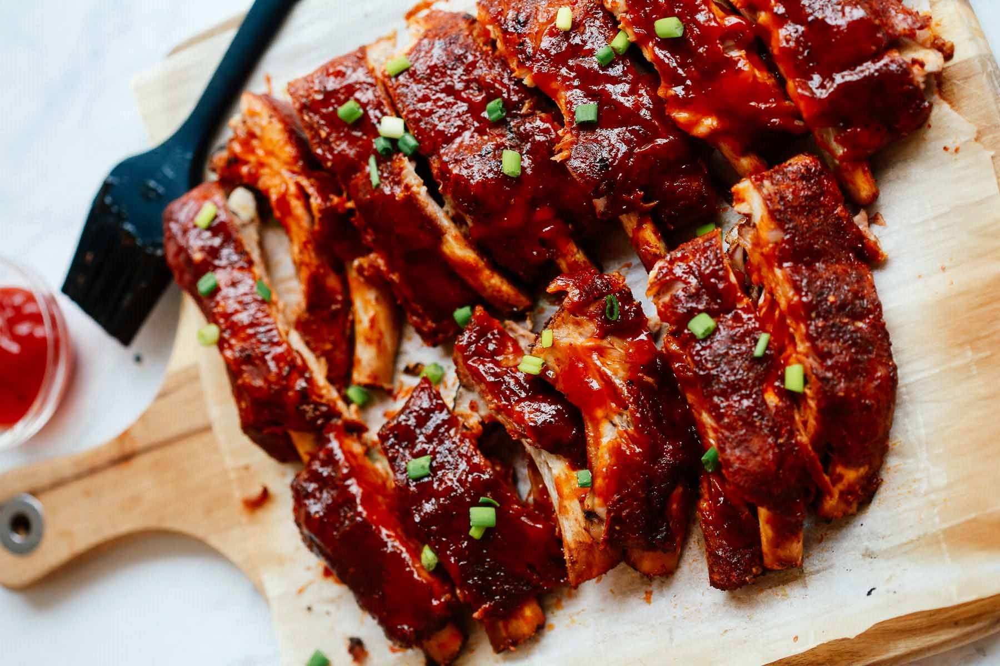

Oven beef ribs

Description
You will taste heaven after making this recipe if you love ribs.
Ingredients
- 2 pounds beef short ribs
- ¾ cup red wine
- ½ cup olive oil
- ⅓ cup soy sauce
- ¼ cup brown sugar
- 2 tablespoons all-purpose flour
- 4 cloves garlic, minced
- 1 pinch curry powder
Steps
- Preheat the oven to 425 degrees F (220 degrees C).
- Place ribs in a large pot and fill with enough water to cover. Bring to a boil and cook until meat is no longer pink, about 20 minutes. Drain.
- Stir together red wine, olive oil, soy sauce, brown sugar, flour, garlic, and curry powder in a medium bowl.
- Coat ribs generously with sauce and arrange on a baking sheet.
- Roast in the preheated oven until fork-tender, about 30 minutes. Pour remaining sauce over ribs about halfway through cooking.